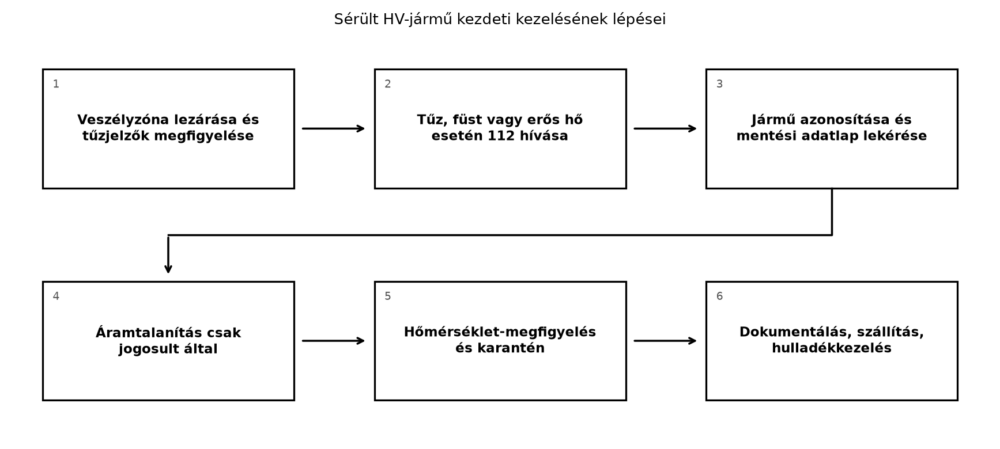

Egy balesetből kimentett elektromos autó érkezik a műhely udvarára. Az autómentő leállítja, az átadó kolléga még annyit mond: „a padló alól hő jött, és mintha sziszegett volna”. A jármű nem ég, a műszerfala sötét, de a küszöb környékén enyhe, savanykás szagot érzel. Egy ilyen pillanatban nem a motorháztető felnyitása az első lépés, hanem az emberek védelme, a veszély megítélése és a megfelelő segítség riasztása. A HV-akkumulátor – bár feszültségmentesnek tűnhet – sérülés után órákig rejtett hőtermelést és késleltetett tüzet okozhat. Itt azt tanulod meg, hogyan kezeld a sérült hibrid/elektromos járművet anélkül, hogy te magad válnál sérültté, és milyen előírások vonatkoznak a tárolásra, szállításra és az akkumulátor hulladékkezelésére.
A feszültségmentesítés és a szigetelési ellenállás mérés alapjait a Mérések a HV-rendszeren: szigetelési ellenállás és potenciálkiegyenlítés alfejezetben tanultad meg; itt ezt az eljárást csak akkor idézzük fel, ha a gyártói utasítás megköveteli, és a munkát jogosult személy végzi.
Képzeld el a jármű köré húzott három zónát. A forró zóna a jármű körüli kb. 1–2 méter (tanulási példa, ellenőrizendő: tűzoltói eljárásrend); ide csak a mentést végző, védőfelszerelést viselő kioktatott személy léphet be. A meleg zóna nagyjából 5–10 méter; ide már a mentesítő kolléga irányításával léphetsz, de a szélirányt figyelni kell, mert a füst mérgező gázokat tartalmazhat. A hideg zóna a telephely biztonságos része, ahol a dokumentációt, az eszközöket és a hívásokat intézed. A jármű oldalán vagy a szélvédőre ragasztott QR-kód a gyártói mentési adatlapra mutat; ezen a lapon a gyártó az ISO 17840 jelkulcsa szerint jelöli a HV-akkumulátort és a nagyfeszültségű kábeleket, a légzsákokat és gázgenerátorokat, és egyértelműen megadja a 12 V-os akkumulátor és a HV-leválasztó helyét.
A felülnézeti vázlaton a jármű körül a forró (kb. 1–2 m) és a meleg (kb. 5–10 m) zóna látható; a hideg zónában történik a dokumentálás, a 112-hívás és a mentési adatlap lekérése, a járművet a szél felől közelítjük meg. A HTML-változat a következő eljárás hat lépésén mutatja, ki hol áll és mit tesz.
Az alábbi folyamatábra egy sérült HV-jármű észlelésekor követendő alapgondolatot mutatja. A konkrét sorrend mindig a gyártói adatlaptól, a tűzoltásvezetőtől és a hatályos munkavédelmi szabályzattól függ.

A diagramon egy irányított lépéssor látható: először a zóna lezárása és a tűzjelzők megfigyelése, majd a szükség szerinti riasztás, azután a jármű azonosítása és a gyártói adatlap felhasználása. Az áramtalanítás csak jogosultra tartozik; ha a jármű nem mutat közvetlen tűz- vagy gázjelet, a hőmérséklet-megfigyelés és a karanténba helyezés következik. A legvégén a dokumentálás, a szállítás és a hulladékkezelés zárja a folyamatot.
Definíció. Sérült HV-jármű: olyan hibrid vagy elektromos jármű, amelynek nagyfeszültségű akkumulátora vagy HV-villamos berendezése ütközés, tűz, vízbehatolás, túltöltés vagy súlyos műszaki hiba miatt mechanikailag, termikusan vagy villamosan károsodott, vagy ésszerűen feltételezhető, hogy károsodott.
Definíció. Hőmegfutás (thermal runaway): a lítiumion cellában öngyorsuló, exoterm kémiai folyamat, amelyben a cella belső hőmérséklete gyorsan növekszik, a cella megduzzad vagy kinyílik, gyúlékony elektrolitgőzt és mérgező gázokat bocsát ki, a hő pedig átterjedhet a szomszédos cellákra.
Definíció. Mentési adatlap (rescue sheet): a jármű gyártója által készített, az ISO 17840 szerinti (ellenőrizendő: az ISO 17840 hatályos kiadása) műszaki információs lap, amely a jármű típusához kötötten ábrázolja a HV-akkumulátor, a HV-vezetékek, a leválasztási pontok, a légzsák- és övfeszítő egységek, a 12 V-os akkumulátor, valamint a karosszéria vágási zónáinak helyét.
Definíció. Karanténtárolás: a sérült vagy gyanús HV-jármű elkülönített, tűzbiztos, szellőztetett, megfigyelhető helyen való elhelyezése, ahol a visszagyulladás vagy a késleltetett hőmegfutás kockázatát a többi járműtől és az éghető anyagoktól való távolság csökkenti.
Összefüggés. A hőmegfutás esélye nem szűnik meg azonnal a láng elfojtása után. A cellák belsejében a kémiai reakció tovább folyhat, ezért a járművet visszagyulladásig hűteni és megfigyelni kell. Ezt használjuk a Gyakorlati vizsgafelkészülés: komplex hibakeresési és szerelési feladatok alfejezetben is.
Gyakorlat (eljárás). Az alábbi számozott lépések tanulási céllal mutatják be a sérült HV-jármű első kezelését. A munkát csak a gyártói javítási és mentési utasítás szerint, a munkáltatói kockázatértékelés alapján, jogosult személy végezheti.
Biztonsági korlát. A feladat tanműhelyi környezetre, oktató felügyeletére és a gyártói javítási utasítás betartására vonatkozik; a megadott értékek tanulási példák.
Figyelem. A hőmegfutás első jelei nem mindig lángok. Gyakori jelek: a jármű padlólemezének vagy küszöbének felpúposodása; a HV-akkumulátorház repedése; sziszegő, sercenő, pukkanó hang; fehér vagy sötét füst; savanykás, gyümölcsös, oldószeres szag; a jármű hirtelen felmelegedő pontjai. Ha ebből bármelyiket észleled, ne nézd közelről, hanem zárd le a területet és riassz.
Figyelem. A lítiumion akkumulátorból származó égéstermékek és bomlásgázok – például szén-monoxid, hidrogén-fluorid, foszfor-oxifluorid és elektrolitgőzök – belélegezve súlyos egészségkárosodást okozhatnak. A tűzoltók a munkát megfelelő légzésvédelemmel végzik; te ne próbálj „csak bekukkantani”. A műhelyben használt félmaszk vagy szűrőbetét nem véd minden gáz ellen.
Tilos. A HV-akkumulátortűz oltását kioktatatlan személy ne kezdje meg; a kézi porral oltó készülék általában nem alkalmas a cellacsomag mélyén zajló hőtermelés megállítására. Tilos a sérült akkumulátorházat megbontani, a cellákat kiszúrni, vagy a járművet zárt, szellőzetlen csarnokba behúzni, amíg a tűzveszélyt ki nem zárták.
HV-biztonság. A sérült HV-járművön a narancssárga jelölésű, több száz volt egyenfeszültségű rendszer sérülése áramütést, ívkisülést és égést okozhat. A tűzoltás során a víz ugyan csökkentheti a szigetelést, de a tűzoltói gyakorlatban a nagy mennyiségű víz hűtőhatása az elsődleges; a beavatkozást a tűzoltók végzik, feszültség alatti közegre vonatkozó szabályaik szerint. A javítóműhelyi személyzet csak a gyártói feszültségmentesítés és a feszültségmentesség ellenőrzése után, jogosultság birtokában dolgozhat a rendszeren.
Példa (hőelvonás). Egy 60 kWh-s akkumulátor tárolt villamos energiája . Tegyük fel, hogy csak ennyi hőt kell vízzel elvonni (tanulási példa; a valóságban a hőmegfutásnál ehhez a cellák és a jármű anyagainak égéshője is hozzáadódik). Számítsd ki, körülbelül hány liter 20 °C-os vizet kellene teljesen elpárologtatni, ha a víz fajhője , párolgáshője pedig .
Számítás.
Adott: , , , a víz sűrűsége . Keresett: a víz tömege .
Egy kilogramm 20 °C-os víz melegítése 100 °C-ig: Egy kilogramm 100 °C-os víz elpárologtatása: Egy kilogramm víz összes hőelvonása: A szükséges tömeg: Ez kb. 83 liter víz, ha a víz 20 °C-ról forr fel, és teljesen elpárolog. ∎
Megjegyzés. A gyakorlatban ennél nagyságrendekkel több vízre van szükség: a cellák és a jármű anyagainak égéshője a tárolt energiánál is nagyobb lehet, a víz nagy része nem párolog el, és a tűzoltók ezért több ezer liter vízzel hűtenek (ellenőrizendő: tűzoltói szakirodalom). Emellett a cella belsejében keletkező hő egy része a környezetbe távozik, a víz nem mind éri el a forrpontot, és a hőtermelés folyamatos. A tűzoltók célja ezért a hűtés, a hőmérséklet csökkentése, nemcsak a láng elfojtása.
A mentési adatlap nem helyettesíti a szerelői dokumentációt, hanem a gyors, baleseti helyszíni döntést segíti. A jármű azonosítása után a gyártó online adatbázisában vagy a fedélzeti QR-kódból elérhető lapon ellenőrizd:
Előírás (szabvány/gyártói adat). A mentési adatlapokra vonatkozó nemzetközi műszaki leírást az ISO 17840 sorozat adja (ellenőrizendő: az ISO 17840 hatályos kiadása és a gyártói kötelezettség köre). A lapot a jármű gyártója a mentő- és tűzoltó szervezetekkel együttműködve dolgozza ki; a műhelyi dolgozó a hibajavítás során ezt kiegészítésként használja, de a javítási műveleti utasítást a gyártói diagnosztikai és szervizdokumentációból kell venni.
Szállítás. A sérült HV-jármű szállítása nem egyszerű autómentési feladat. A járműben lévő, sérült lítiumion akkumulátor a veszélyes áruk közúti szállításáról szóló ADR hatálya alá tartozhat (ellenőrizendő: az ADR aktuális kiadása és a vonatkozó UN-számok). Az ép, járműbe épített akkumulátor bizonyos engedményekkel szállítható, a sérült vagy hibás akkumulátor azonban szigorúbb csomagolási, jelölési és dokumentációs követelményeket kaphat.
A szállítás előtt a jármű HV-rendszerét a gyártó szerint feszültségmentesíteni kell; ezt csak jogosult személy végezheti. A járművet tréleren vagy megfelelően rögzítve kell szállítani, a hajtott kerekeket nem szabad a talajon forgatni, mert az inverterben indukált feszültség keletkezhet, és a rendszer károsodhat (ellenőrizendő: a jármű gyártójának vontatási utasítása). A szállítás alatt a járművet hőmérséklet-figyeléssel kísérni, és a vontató járművön megfelelő tűzoltó készüléket kell tartani.
Karanténtárolás. A sérült HV-járművet a műhelyben vagy a bontóban nem szabad közvetlenül az általános papír- és olajtároló mellett, zárt, nem szellőztetett csarnokban, vagy más járművek centiméteres közelségében elhelyezni.
Szabály (munkahelyi karantén). Tárold a sérült HV-járművet lehetőleg szabadban vagy külön tűzszakaszban, éghető anyagoktól legalább 5–10 méterre (tanulási példa, ellenőrizendő: tűzoltói eljárásrend), sík, nem éghető, az oltóvíz összegyűjtését lehetővé tevő aljzaton, rögzítve (kerékékkel), szélirány felőli megközelítéssel. A terület legyen megfigyelhető, lehetőleg hőérzékelővel vagy hőkamerával felügyelve. A tárolási idő alatt a jármű hőmérsékletét rendszeresen ellenőrizni kell. A konkrét távolságot és a megfigyelési időt a gyártó, a biztosító és a munkáltatói kockázatértékelés határozza meg (ellenőrizendő: gyártói adat és helyi előírás).
Megjegyzés. A sérült HV-akkumulátor kiszerelése után a tárolás elkülönített, nem éghető, fedett, szellőztetett helyen, hőálló tárolóban történjen; a tároló legyen lezárható, jelölt és a tűzoltóság számára ismert. A cellákat tilos egymásra dobálva, mechanikailag sérülten tárolni.
A hajtásból kiöregedett, de még nem sérült HV-akkumulátor nem kommunális hulladék. A gyártó vagy a megbízott gyűjtő-hálózat köteles visszavenni, a feldolgozó pedig a lítiumot, kobaltot, nikkelt és más anyagokat visszanyerni. Ezt a területet az Európai Unióban az új akkumulátor-rendelet (ellenőrizendő: az EU 2023/1542 rendelet hatályos szövege és a magyar végrehajtási jogszabályok) és a hulladékokra vonatkozó hazai előírások szabályozzák.
Definíció. Második élet (second life): a hajtásra már nem alkalmas, de tárolásra még használható HV-akkumulátor olyan utóhasznosítása, amelyben álló energiatárolóként, áthidaló tárolóként vagy más, alacsonyabb igénybevételű feladatra alkalmazzák. A második életű alkalmazást gyártói vizsgálatnak, engedélynek és a biztonsági követelményeknek kell megelőznie.
Környezetvédelem. A sérült HV-akkumulátor veszélyes hulladéknak minősülhet, ezért gyűjtése, tárolása és szállítása a veszélyes hulladékra vonatkozó nemzeti előírások szerint történik (ellenőrizendő: a hulladékról szóló 2012. évi CLXXXV. törvény és a veszélyes hulladékokra vonatkozó végrehajtási rendelet). Tilos a sérült akkumulátort, az elektrolitmaradékot, az oltóvizet vagy az azzal szennyezett rongyot a kommunális hulladékba, csatornába vagy élővízbe juttatni. Az akkumulátort tilos feltörni, összepréselni, fúrni vagy nyílt lánggal hevíteni.
Előírás (uniós akkumulátor-szabályozás). Az akkumulátorok teljes életciklusát, gyűjtését, újrahasznosítási hatékonyságát, az újrahasznosított anyagok felhasználását és a gyártói kiterjesztett felelősséget az EU akkumulátor-rendelet írja elő (ellenőrizendő: az EU 2023/1542 rendelet és a hatályos magyar végrehajtási jogszabályok). A járműipari HV-akkumulátorokra külön gyűjtési és újrahasznosítási célok vonatkoznak, a pontos értékek és határidők jogszabályban rögzítettek, ezért azokat a kiadás előtt ellenőrizni kell.
Valós eset. Egy villanyműhelybe délután érkezik egy balesetes elektromos autó. A műszaki átvevő a küszöbnél 70 °C-ot mér, miközben a környező autók 25 °C-osak; a padlólemez alól savanykás szag jön. A kolléga azonnal kiüríti a csarnokrészt, lezárja a veszélyzónát, hívja a tűzoltókat, és a gyártói mentési adatlapot átadja nekik. A jármű kimozgatásáról a tűzoltásvezető dönt. A tűzoltók hőkamerával megállapítják, hogy egy cellacsoport folyamatosan melegszik; a járművet elárasztják vízzel, majd a gyártói utasítás szerint 48 órára karanténba helyezik. A tanulság: a hőmérséklet-különbség és a szag már a láng megjelenése előtt jelezte a hőmegfutás kockázatát.
Hiba. Azt gondolni, hogy ha nincs láng, nincs veszély. A hőmegfutás füst és hő formájában, késleltetve is jelentkezhet, ezért a sérült akkumulátort nem szabad felügyelet nélkül hagyni.
Hiba. A HV-akkumulátortűz oltását kézi poroltóval vagy a csomagtérbe beöntött kevés vízzel próbálni. A hő a cellacsomag belsejében termelődik; a megoldás a nagy mennyiségű, tartós hűtés, a jármű alulról való elárasztása és a tűzoltói beavatkozás.
Hiba. A sérült elektromos járművet más autók közé, zárt csarnokba állítani, vagy a bontott akkumulátort hagyományos raktárpolcra tenni. A visszagyulladás kockázata miatt a járművet és az akkumulátort elkülönített, tűzbiztos karanténban kell tárolni, amíg a gyártói ellenőrzés meg nem erősíti a biztonságos állapotot.
Hiba. A 12 V-os akkumulátor lekötését vagy a HV-szervizcsatlakozó leválasztását jogosulatlanul, a gyártói eljárás ismerete nélkül elvégezni. Ez áramütéshez, ívkisüléshez, a vezérlő károsodásához vezethet, és érvényteleníti a biztosítói kárfelvételt.
Válaszolj röviden, majd hasonlítsd össze a Megoldások elején lévő válaszokkal.
1. feladat (A). Fogalmazd meg a hőmegfutás és a karanténtárolás definícióját saját szavakkal, a könyvben megadott értelemben.
2. feladat (A). Számítsd ki, körülbelül hány liter 20 °C-os vizet kell teljesen elpárologtatni ahhoz, hogy egy 40 kWh-s akkumulátor tárolt energiájának megfelelő hőt (40 kWh 3,6 MJ/kWh = 144 MJ) vonj el. Fajhő , párolgáshő .
3. feladat (B). Sorold fel, milyen információkat kell keresned a gyártói mentési adatlapon, mielőtt egy sérült HV-jármű közelében bármilyen munkát végeznél.
4. feladat (B). Egy elektromos autó a telephelyre érkezik; a műszerfalon nincs hibajelzés, de a padló alól savanykás szag jön, és a hőkamera a bal küszöbnél 65 °C-ot mutat. Állítsd helyes sorrendbe: karanténba helyezés, tűzoltók riasztása, jármű azonosítása, veszélyzóna lezárása, hőmérséklet-megfigyelés, jogosult általi feszültségmentesítés (ha a gyártó szerint szükséges).
5. feladat (C). Magyarázd el, miért nem elegendő egy kézi porral oltó készülék a HV-akkumulátor tüze esetén, és miért a víz a leggyakoribb hűtőközeg a tűzoltói gyakorlatban annak ellenére, hogy a víz elektromosan vezető anyag.
6. feladat (D). Egy bontóudvaron egy kiszerelt, sérült HV-akkumulátort helyeznek el egy fa raklapon, a fedett szín alatt, közvetlenül a farakás mellett. A munkavezető szerint „majd holnap elviszik”. Milyen hibákat követtek el, és milyen helyes tárolási, jelölési és hulladékkezelési lépéseket kell megtenni?
A hőmegfutás a lítiumion cellák öngyorsuló, exoterm kémiai folyamata, amely során a cella belső hőmérséklete gyorsan nő, a cella megduzzad vagy kinyílik, gyúlékony elektrolitgőzt és mérgező gázokat bocsát ki, és a hő átterjedhet a szomszédos cellákra. A karanténtárolás a sérült vagy gyanús HV-jármű elkülönített, tűzbiztos, szellőztetett, megfigyelhető helyen való elhelyezése a visszagyulladás kockázatának csökkentésére.
Adott:
,
,
,
.
Keresett:
(kg).
Egy kilogramm víz hőelvonása:
Szükséges tömeg:
Mivel a víz sűrűsége kb.
,
ez kb. 56 liter víz. A valós oltóvízigény ennek sokszorosa. ∎
A mentési adatlapról keresd: a HV-akkumulátor elhelyezkedését; a nagyfeszültségű kábelek futását; a HV-szervizleválasztó és a 12 V-os akkumulátor leválasztási pontjait; a légzsák- és övfeszítő egységek helyét; a vágási zónákat és azokat a karosszériarészeket, ahová nem szabad vágni; továbbá a gyártó oltási, hűtési vagy vízbe merítési ajánlásait.
Helyes sorrend: (1) veszélyzóna lezárása, (2) tűzoltók riasztása, (3) jármű azonosítása és mentési adatlap lekérése, (4) hőmérséklet-megfigyelés, (5) ha a gyártó előírja, jogosult általi feszültségmentesítés, (6) karanténba helyezés. A feszültségmentesítést nem szabad a tűzoltás helyett végrehajtani, ha közvetlen tűz vagy gázképződés van.
A porral oltó készülék elsősorban a lángot fojtja el, de nem hűti le a cellacsomag belsejét, ezért a kémiai hőtermelés és a visszagyulladás kockázata megmarad. A víz nagy fajhője és nagy párolgáshője miatt nagyon sok hőt képes elvonni: 1 kg víz elpárologtatása kb. 2,6 MJ hőt von el. A víz vezetőképessége valódi kockázat, ezért a tűzoltók megfelelő távolságból, szakaszosan vagy elárasztással alkalmazzák, és a műveletet a gyártói adatlap, a helyszíni körülmények és a tűzoltási szabályok szerint irányítják. A cél a hőmérséklet csökkentése, nem a cellák elektromos szempontú hűtése.
Hibák: a sérült HV-akkumulátor éghető anyagok (fa raklap, farakás) közelében való elhelyezése; fedett, de szellőzés nélküli színben való tárolás; az elszállítás halogatása; a hiányzó jelölés és elkülönítés; a hulladékkezelési előírások figyelmen kívül hagyása. Helyes eljárás: a területet le kell zárni, a hőmérsékletet megfigyelni; az akkumulátort nem éghető, hőálló, szellőztetett tárolóba kell helyezni, legalább a környező éghető anyagoktól és más járművektől való biztonságos távolságra; a tárolót jelölni kell; a veszélyes hulladékot a gyártó vagy a kijelölt gyűjtő-hálózat részére kell átadni, a hulladékkísérő dokumentumok kitöltésével; a munkavégzést a veszélyes hulladékokra vonatkozó hatályos előírások szerint dokumentálni kell (ellenőrizendő: a hulladékjogszabályok és a gyártói visszavételi utasítás).
A sérült hibrid vagy elektromos jármű kezelése során a legfontosabb, hogy a hőmegfutás jeleit – hő, füst, sziszegés, savanykás szag, deformáció – már a láng előtt felismerd, és a veszélyzónát lezárva a tűzoltóságot riaszd. A gyártói mentési adatlap (ISO 17840 szerint; ellenőrizendő) mutatja a HV-akkumulátor, a nagyfeszültségű kábelek, a leválasztó és a légzsákok helyét. Az áramtalanítás csak jogosult személy feladata; a járművet nem szabad zárt, éghető anyagokkal teli csarnokba vagy más autók szorosan mellé állítani. A tűz oltása nagy mennyiségű vízzel, a hő elvonásával történik; a visszagyulladás kockázata miatt a járművet karanténban, hőmérséklet-megfigyelés mellett kell tárolni. A kiszerelt, sérült akkumulátor veszélyes hulladék, gyűjtése és szállítása az ADR és a hulladékjogszabályok, újrahasznosítása az EU akkumulátor-rendelet szerint történik (ellenőrizendő). A második élet csak gyártói vizsgálat és engedély után jöhet szóba.
Továbbvitt eredmény. A sérült HV-jármű kezelésének lépéseit – veszélyzóna, riasztás, azonosítás, jogosult általi feszültségmentesítés, megfigyelés, karantén, dokumentáció – a Gyakorlati vizsgafelkészülés: komplex hibakeresési és szerelési feladatok alfejezetben vizsgafeladatként is alkalmazni fogjuk.
Forrástípusok: gyártói mentési adatlapok és javítási utasítások; ISO 17840 szabványsorozat (ellenőrizendő: hatályos kiadás); az ADR veszélyes áruk közúti szállításáról szóló európai megállapodás (ellenőrizendő: aktuális kiadás és UN-számok); a hulladékról szóló magyar törvény és a veszélyes hulladékra vonatkozó jogszabály (ellenőrizendő: hatályos szöveg); az EU akkumulátor-rendelet (ellenőrizendő: az EU 2023/1542 rendelet hatályos változata és a magyar végrehajtási jogszabályok). Az alfejezetben szereplő fizikai állandók (a víz fajhője, párolgáshője) általánosan elfogadott tanulási adatok, de a hőelvonási példákban a hőmennyiség a tárolt villamos energiából számolt szemléltető érték, nem mért hatósági adat.